The Complete Interactive Brochure, Step-by-Step Setup Roadmap, Daily Operating Guide, and Field-by-Field Settings Reference for GRID-EMS (GEMS) by New Energy Grid & The Charge Grid
100% LocalZero Monthly Fees
1-SecondReal-Time Control Loop
8 TabsEvery Setting Explained
4-TierNegative Price Shield
System ReleaseGEMS v9.36.1
Who This Guide Is ForHomeowners, Residents, Facility Managers & Installers
1. Welcome to GEMS: Why Your Home Needs an Energy Brain
Welcome to GEMS (Grid Energy Management System) by New Energy Grid and The Charge Grid! Installed directly inside your electrical cabinet on an industrial Raspberry Pi 5 edge computer with ultra-durable NVMe solid-state storage, GEMS is the autonomous conductor of your entire electrical ecosystem.
☀️🔋
Maximize Free Solar & Storage
Every surplus watt from your Solis Hybrid Inverter is routed first to your household, then into your home battery, then into your Raedian EV Charger, and finally into hot water thermal storage—boosting self-consumption up to 85%+.
🛡️📉
Flanders Peak Shaving & Fuse Guard
Reads your digital P1 meter every second. If cooking and laundry spike your load, GEMS instantly discharges your battery and throttles your EV charger so your 15-minute Capaciteitstarief peak stays low and your main breaker never trips.
💶⚡
Dynamic Tariff & Negative Price Shield
Downloads Day-Ahead EPEX Spot prices at 13:00 CET daily. Charges your battery and EV during the cheapest night hours and protects you from paying export penalties when afternoon solar prices turn negative.
🔒 100% Local Edge Autonomy — Zero Subscriptions, Zero Cloud Lock-In
Unlike cloud-dependent gadgets that stop working when your internet drops or charge monthly fees, GEMS executes all measurement, dynamic load balancing, battery dispatching, and tariff formulas 100% locally inside your home. Optionally, you can pair with GRID-EMS-SERVER (https://ems.newenergygrid.com) for remote smartphone access and installer diagnostics—completely free.
2. 24 Hours in the Life of GEMS (Interactive Storyboard)
Wonder what GEMS actually does while you sleep, work, cook, and relax? Follow a typical 24-hour day in a home equipped with a Solis S6 Hybrid Inverter + Battery, a Raedian NEO Smart EV Charger, a P1 Smart Meter, and an SG-Ready Heat Pump:
🎮 Interactive Simulator: Click a Time of Day to See How GEMS Reacts!
🌙 02:30 AM — Cheap Spot Window (€0.04/kWh): Tomorrow's weather forecast predicts heavy clouds, and spot prices are at their lowest point of the night. GEMS automatically commands the Solis Hybrid Inverter to pre-charge the home battery to 80% Target SoC and schedules the Raedian EV Charger during the 4 cheapest hours—staying strictly below the 2.50 kW Flanders Capacity Peak Limit!
02:00 – 05:00 • NIGHT ARBITRAGE
1. Smart Night Pre-Charging (Super-Dal & Spot)
GEMS checks the Open-Meteo solar forecast for tomorrow. If tomorrow is cloudy and tonight's EPEX Spot price drops below your Grid Charge Ceiling (€/kWh), GEMS pre-charges your Solis battery and Raedian EV charger while capping total grid import at 2.50 kW.
09:30 – 12:30 • SOLAR HARVEST
2. 100% Free Sunshine & 1P/3P EV Switching
As solar climbs to 2.8 kW, GEMS starts your Raedian charger on Single-Phase (1P) so even modest sunshine goes into your car. When solar exceeds 4.3 kW, GEMS automatically switches the charger to Three-Phase (3P) after a safe 20-second relay pause!
13:30 – 15:30 • NEGATIVE PRICE SHIELD
3. 4-Tier Defense Against Negative Export Prices
Afternoon spot prices drop to -€0.09/kWh. GEMS fills the battery (Tier 1), boosts the EV to max speed (Tier 2), triggers the SG-Ready heat pump relay (Tier 3), and—once all buffers are full—throttles the Solis inverter (Tier 4) so you pay €0.00 in export penalties (while respecting Flemish GSC subsidies!).
18:00 – 21:00 • EVENING PEAK SHAVING
4. Dinner Cooking & Capaciteitstarief Guard
The induction stove, oven, and heat pump draw 5.2 kW while electricity is expensive (€0.34/kWh). Within 1 second, GEMS pauses EV charging and discharges 3.2 kW from your home battery, keeping net grid import safely below your 2.50 kW monthly peak target!
3. Step-by-Step Configuration: The 4-Step First-Boot Wizard
When you power on a brand-new (or factory-reset) GEMS controller and open http://ems.local (or its IP address) in your browser, GEMS greets you with an interactive 4-Step Commissioning Wizard. Follow these 4 clear steps to configure your unit in under 3 minutes:
Step 1 of 4Language Selection, Local Security PIN & Safety Acknowledgment
Interface LanguageNL / FR / EN
What It Does Instantly switches the entire GEMS interface, tooltips, and status banners between Nederlands (NL), Français (FR), and English (EN).
When To Use Pick your preferred household language; you can also switch it anytime in the top header bar.
Local Installer Access PINMin. 6 chars
What It Does Sets the secret password that unlocks Certified Installer Mode (the padlock icon in Settings). Hashed locally with bcrypt and protected by a 5-attempt brute-force lockout.
Important Write this PIN down! Everyday homeowners never need a password to use the dashboard, EV charger modes, or PDF reports—this PIN strictly guards electrical & contract engineering settings.
Mandatory Electrical Safety Checkbox: Confirm that physical overcurrent protection (MCBs/RCDs) is installed in compliance with AREI (Belgium) or NEN 1010 (Netherlands) before clicking Continue to Grid Limits →.
Step 2 of 4Country, Region, Grid Topology & Main Breaker Limits
Country & RegionBE (Flanders) / NL
What It Does Selects Belgium (BE) (with sub-regions Flanders, Wallonia, or Brussels) or Netherlands (NL).
When To Use Choose BE + Flanders to enable the 15-minute Capaciteitstarief peak shaver and Elia Green Grid widgets. Choose NL to enable Dutch Smart Saldering and hide Belgian widgets.
Grid System Topology1x230V / 3x400V / 3x230V
What It Does Tells GEMS how your street cable is wired so it converts Amps to Watts accurately across phases:
• single_phase_230v: 1-Phase 230V + Neutral (e.g. 40A = 9.2 kW)
• three_phase_400v: 3-Phase 400V + Neutral Wye (e.g. 3x25A = 17.3 kW)
• three_phase_230v_delta: 3-Phase 230V Delta without Neutral (common in older Belgian streets; applies √3 phase-to-phase math).
Main Breaker Rating (A)16A – 250A (e.g. 25A/40A)
What It Does Sets both your Phase Limit (A) and Nominal Current (A) to match the physical main breaker printed on your utility meter (e.g., 25 A, 32 A, 40 A, or 63 A).
Why Critical GEMS never allows your EV charger or battery grid-charging to exceed this amperage on any phase (L1, L2, or L3), preventing main fuse blackouts.
Meter Offline Fallback Current (A)Default: 6 A (0A–32A)
What It Does Defines the safe failsafe charging current sent to EV chargers if the P1 meter cable is accidentally unplugged or loses communication for more than 30 seconds.
When To Use Set to 0 A (Pause) on tight 25A fuses for maximum safety, or 6 A (minimum charge) so a car can still trickle-charge overnight if the meter cable is loose.
Flanders Capacity Peak Limit (kW): Shown automatically when Flanders is selected (default 2.5 kW). Sets your monthly 15-minute peak shaving target.
Step 3 of 4Quick Hardware Discovery (USB Serial & LAN Auto-Scan)
Click Scan Now. GEMS automatically enumerates persistent Linux USB paths (/dev/serial/by-id/*) to detect USB P1 Smart Meter cables (115200 8N1 / 9600 7E1) and RS-485 Modbus RTU dongles, while sweeping your local /24 Ethernet network for Solis inverters, Raedian EV chargers, and Shelly smart relays.
Step 4 of 4Optional Cloud Pairing (GRID-EMS-SERVER) & Finish
If you have a pairing token (e.g., PAIR-XXXX-TCG) from https://ems.newenergygrid.com, paste it here to link your unit for remote access—or leave it blank to run 100% offline. Click Finish & Launch Dashboard!
4. Normal Homeowner Mode vs. Certified Installer Mode (🔒 Padlock)
GEMS is engineered so that homeowners enjoy effortless, password-free daily control while critical electrical limits remain safely locked behind a discreet padlock icon in the top-right corner of the Settings page.
Feature / Action
🏡 Normal Homeowner Mode (Default — Locked 🔒)
🛠️ Certified Installer Mode (Unlocked via PIN 🔓)
Login Requirement
Zero password prompts! Opens immediately on your home Wi-Fi / LAN.
Click the 🔒 Padlock badge in Settings and enter your 6+ character Installer PIN.
Dashboard & EV Modes
Full access: Live PowerFlow, click-to-reveal history modals, EV mode switching (Eco, PV Only, Fast, Off), and Printable PDF Energy Reports.
Full access + quick strategy mode switcher.
Visible Settings Tabs
2 Safe Tabs:Devices (read-only status + live </> Debug probe & report submission) and System Info (view IP/build, Reboot System, and verified Software Update).
All 8 Settings Tabs:Strategy, Energy Contract, Devices (add/edit/delete + Fleet DLB), Relays & Switches, Network, System Info (Backup/Restore, PIN, SSL, Factory Reset), Notifications, and Cloud Server.
Sidebar Engineering Tools
Dashboard, Logger (live system logs & export), and Settings.
Adds Scanner (LAN/Modbus discovery) and Cockpit Terminal (:9090).
5. The Interactive PowerFlow Dashboard, KPIs & Deep-Dive Modals
Your main Dashboard updates every second via a live WebSocket stream. At the center is the animated PowerFlow Hero, surrounded by real-time financial and energy KPI cards.
Figure 5.1: The GEMS Dashboard showing live Solar, Home Load, Solis Battery SoC, Grid Import/Export, and Raedian EV Charger status.
Every Dashboard Circle & KPI Number Explained
Node / KPI Card
Color / Example
What It Means & What Happens When You Click It
☀️ Solar Node
● Gold (4.8 kW)
Instantaneous roof solar output and today's total kWh. Click the circle to open the 24h Solar bell curve, peak wattage, and inverter curtailment history.
🔋 Battery Node
● Emerald (85% SoC)
Live charge/discharge power and State of Charge (%) of your Solis battery. Click the circle to inspect 24h SoC %, charge/discharge kW, and battery temperature/health.
⚡ Grid Node
● Blue (-1.2 kW)
Net street meter power (Import from street vs. Export to street). Click the circle to view per-phase voltages (L1/L2/L3), import/export curves, and the Flanders 15-minute peak tracker.
🏠 Home Load Node
● Teal (0.95 kW)
Total power consumed by household appliances right now. Click the circle to see your 24h domestic consumption profile.
🚗 EV Charger Node
● Purple (7.4 kW)
Live charging speed and mode of your Raedian wallbox. Click the circle to switch modes (Eco, PV Only, Fast, Off) or view session kWh added.
🔥 Relay / Heat Pump
● Orange (ON / OFF)
Shows whether your smart boiler or SG-Ready heat pump is active. Click the circle to view thermal runtime and manual override controls.
📊 Self-Consumption vs. Self-Sufficiency
78% / 92%
Self-Consumption: % of your solar power kept inside your home/battery/EV. Self-Sufficiency: % of your home's electricity supplied by your own solar + battery instead of the grid.
🛡️ Monthly Peak (Flanders)
2.50 kW
Highest 15-minute rolling average grid import recorded this calendar month (resets on the 1st of each month at 00:00). Automatically hidden for Dutch (NL) installations.
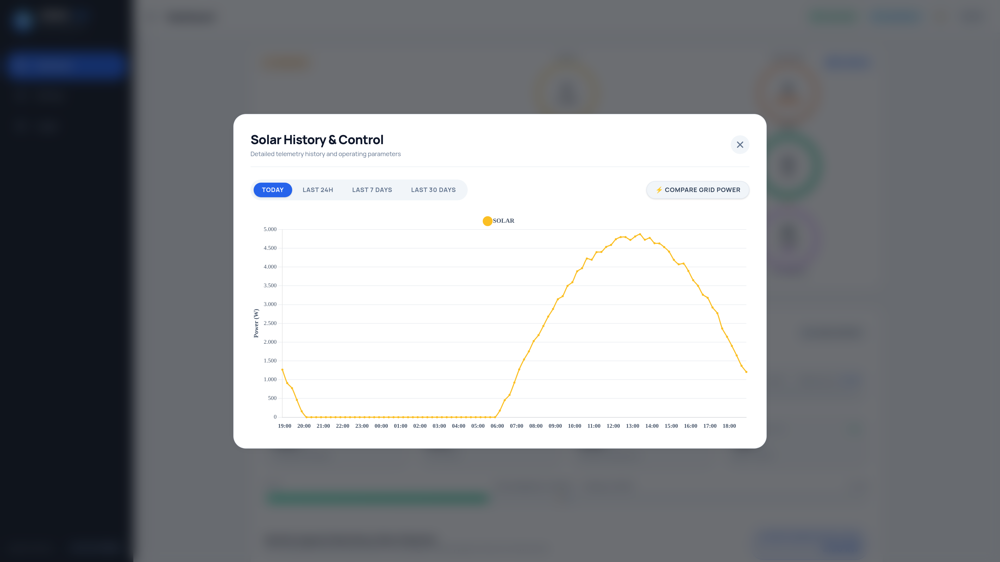
Figure 5.2: Click-to-Reveal Solar Modal with 1h/24h/7d/30d resolution selector and "⚡ Compare Grid Power" overlay button.
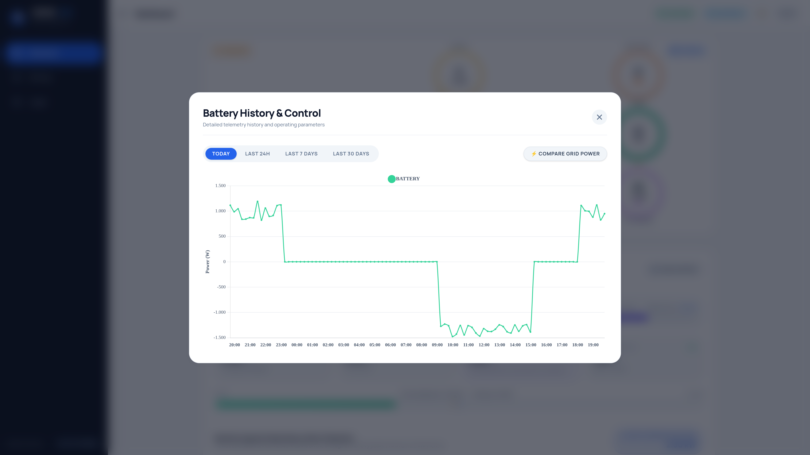
Figure 5.3: Click-to-Reveal Battery Modal showing 24-hour State of Charge (%) and charge/discharge cycles.
6. EV Charging Modes, Automatic 1P/3P Switching & Split-Billing
Whether you tap the EV Charger circle on the Dashboard or configure your Raedian wallbox in Settings, GEMS gives you four intelligent charging modes plus automatic single-phase/three-phase solar adaptation:
🚗 When to Use Each EV Charging Mode
1. ECO (Smart Solar + Cheap Spot Top-Up)
Best for everyday use! Prioritizes free solar surplus during the day and automatically tops up during the configured Cheapest Spot Price Hours (e.g. 01:00–05:00) or when the Belgian Elia Green Grid Share exceeds 65%.
2. PV ONLY (100% Pure Sunshine)
Best for sunny days when working from home. Starts only when net solar export exceeds the 6A EV minimum (1.4 kW on 1P / 4.1 kW on 3P). Never pulls paid power from the grid!
3. FAST (Max Safe Speed)
Best when you need to leave soon. Charges immediately at maximum rated power (11 kW or 22 kW) while GEMS Dynamic Load Balancing still protects your main house fuse from overloading!
4. OFF (Paused / Hold)
Best when reserving battery power for home use. Keeps the charging session paused even while the cable remains plugged into the vehicle.
🔄 How Automatic 1P/3P Solar Phase Switching Works (1.4 kW → 22 kW Continuous Range)
Normally, a 3-phase EV charger requires at least 3 × 6A = 4.14 kW of solar surplus before it can start—wasting smaller morning/afternoon sunshine! When you enable Automatic 1P/3P Solar Phase Switching on a supported charger (such as the Raedian NEO), GEMS starts charging on 1-Phase (1.4 kW to 3.6 kW) as soon as 1.4 kW of solar is available. Once solar surplus stays above 4.2 kW, GEMS sends a pause command, waits a mandatory 20-second anti-welding safety delay so vehicle onboard relays open under zero load, switches the contactor to 3-Phase (4.1 kW to 22 kW), and resumes charging seamlessly!
7. Settings Tab 1: Devices & EV Fleet DLB Cluster
Navigate to Settings → Devices. In Normal Mode, you can view live device status and run </> Debug diagnostic probes. Unlocking Certified Installer Mode (🔓) reveals hardware discovery, adding/editing devices from 170+ verified hardware templates (led by Solis and Raedian), and the EV Fleet Cluster & DLB module.
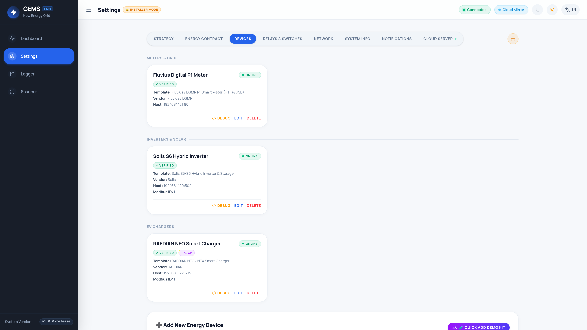
Figure 7.1: Settings → Devices showing connected Solis S6 Hybrid Inverter, Raedian NEO Smart Charger, P1 Meter, and Shelly Pro Relay.
Step-by-Step: Adding or Editing a Device (Every Field Explained)
Click 🔍 Auto-Detect Serial Devices (to automatically find USB P1 smart meters and RS-485 dongles), or click + Add Device under Inverters & Solar, Smart Meters, Batteries & Storage, EV Chargers, or Smart Relays:
Device Name & Template170+ Templates
What It Does Gives your hardware a friendly label (e.g. Solis Roof Hybrid or Driveway Raedian NEO) and selects the exact register map & protocol driver.
Badges Templates display ✓ Verified (production tested), 1P..3P (supports phase switching), or Monitor Only. Toggle Show Experimental in the top bar only when testing beta drivers.
Host IP & TCP Port / Serial PortLAN or /dev/serial/by-id/*
What It Does For network devices, enter the local IPv4 address (e.g. 192.168.1.50) and port (default 502 for Modbus TCP, 80 for REST/Shelly). For USB devices, pick the persistent /dev/serial/by-id/... dropdown path, baud rate (115200 or 9600), and parity (8N1 or 7E1).
Modbus Slave ID (Unit ID)Default: 1 (1–247)
What It Does The Modbus address configured inside the inverter, meter, or charger menu.
When To Change Keep at 1 for most Solis and Raedian units. If multiple RS-485 devices share one cable, assign each a unique ID (1, 2, 3).
What It Does Sets the maximum hardware capacity (e.g. 5.0 kW for a Solis inverter or 11.0 kW for a 3-phase Raedian charger).
Allow Curtailment Check Allow Curtailment on your solar inverter so GEMS can throttle solar export during negative spot price hours or zero-export limits.
Phase Wiring RotationAuto / L1 / L1-L2-L3
What It Does Maps which physical building phase(s) the device is wired to: Auto, single-phase (L1, L2, or L3), or 3-phase rotation (L1-L2-L3, L2-L3-L1, L3-L1-L2).
Why Important If an installer wired charger #2 rotated as L2-L3-L1 to balance the street feeder, selecting L2-L3-L1 here ensures GEMS protects the right physical fuse!
What It Does Appears on Hybrid Inverters:
• Grid Meter Connected? Uncheck if the inverter has no dedicated CT clamps; GEMS will automatically steer the battery using your P1 Smart Meter!
• Battery Connected? & Capacity (kWh): Enables battery SoC tracking and enters usable storage size (e.g. 10.0 kWh).
EV Charger Specific Fields & Optional EV Fleet Cluster DLB Module
When configuring an EV Charger (or clicking Enable Fleet Cluster & DLB at the bottom of the Devices tab for multi-charger parking lots up to 64 bays), these specialized settings appear:
EV / Fleet Setting
Options / Default
What It Does & When to Use It
Bay Number & Fleet Priority
Bay 1–64 VIP, High, Normal, Solar Only
Assigns a parking bay number and charging priority: VIP (1.5x weight) for directors/urgent guests, High (1.25x), Normal (1.0x), or Solar Only (pauses when no solar surplus is available).
Enable Automatic 1P/3P Solar Phase Switching
Checkbox (Off / On)
Enables dynamic 1-Phase (1.4–3.6 kW) to 3-Phase (4.1–22 kW) switching on hardware-capable chargers (such as Raedian) with a built-in 20-second contactor protection delay.
Fleet DLB Active & Zero-Touch Auto Onboard
Toggles in Fleet Card
Activates multi-charger Dynamic Load Balancing across up to 32/64 chargers. When Zero-Touch Auto Onboard is enabled, any new OCPP charger pointed at ws://ems.local/ocpp/{id} is added automatically upon BootNotification!
Cluster Max Current (A) & DLB Arbitration Mode
e.g. 63 A / 80 A priority_queue, equal_share, solar_first
Caps total combined current of all chargers in the parking group. Choose Priority Queue (weighted by VIP/High/Normal), Equal Share (identical amps for every active car), or Solar First (surplus solar distributed first).
Straight-Through OCPP Smart Forwarder (Proxy)
Upstream CPO URL + Auth Header
Allows GEMS to control local load balancing via OCPP while transparently forwarding all RFID authorizations and charging transactions (StartTransaction, MeterValues, StopTransaction) to an external CPO billing platform or employer reimbursement service! Use {chargePointId} in the URL.
Inbound OCPP 1.6-J Station Authentication
Username & Password
Optional HTTP Basic Authentication credentials required from chargers connecting to the local GEMS OCPP WebSocket server.
Settings → Strategy is the analytical brain of GEMS. It is organized into 8 logical cards. Below is every single field explained in plain language so you know exactly what it does and how to tune it:
Time Zone, Address & Lookup Lat/LonEurope/Brussels
What It Does Sets your exact roof coordinates (Latitude & Longitude). Type your street/city and click Lookup Lat/Lon to auto-fill.
Why Used GEMS uses these coordinates to fetch hyper-local hourly solar irradiance forecasts (W/m²) from Open-Meteo so your battery knows whether tomorrow will be sunny or overcast!
Nominal Current (A) & Phase Limit (A)e.g. 25 A / 40 A
What It Does Defines the physical main fuse rating per phase. GEMS calculates instantaneous per-phase headroom (Phase Limit - Active Load) every second.
When To Use Always match your physical utility breaker (e.g. 25 A on 3x400V or 40 A on 1x230V).
What It Does Caps maximum total active power imported from or exported to the street.
Zero-Export If your grid operator forbids solar feed-in, set Allowed Grid Export (kW) to 0.0 kW and enable Active Inverter Curtailment!
Meter Offline Fallback Current0 A (Pause) – 16 A
What It Does Selects the safe current limit enforced on EV chargers if the P1 grid meter goes offline: 0 A (Pause — Recommended), 6 A, 8 A, 10 A, or 16 A.
Choose when: You live in Wallonia, Brussels, or have a standard meter without 15-minute capacity billing. Maximizes solar usage inside the home.
2. Flanders (Peak Shaving)
Choose when: You live in Flanders (Fluvius). Activates the 15-minute rolling average Capaciteitstarief peak shaver and Smart Adaptive Ceiling!
3. Netherlands (Smart Saldering)
Choose when: You live in the Netherlands. Optimizes for Dutch EPEX Spot, Energiebelasting, and prevents costly negative-price feed-in fees (terugleverkosten).
Capacity Peak Limit (kW)Default: 2.50 kW
What It Does Your target ceiling for the Flanders 15-minute rolling average grid import (Fluvius bills a minimum baseline of 2.50 kW).
Smart Adaptive Ceiling If an unavoidable spike (e.g. 3.8 kW when the battery was empty) occurs mid-month, GEMS automatically raises its active ceiling to 3.8 kW for the rest of that month so you enjoy faster charging at zero extra grid cost, then resets to 2.50 kW on the 1st of the next month!
Peak Shaving Buffer (W) & Hysteresis (W)150 W / 250 W
What It DoesPeak Shaving Buffer (W) (default 150 W) triggers battery discharge slightly before you hit the exact limit (e.g. at 2,350 W) so sudden appliance spikes never overshoot. Ramp-up Hysteresis (W) (default 250 W) prevents EV chargers from rapidly oscillating up and down when clouds pass.
Active Inverter Curtailment & Base ThresholdToggle + 0.00 €/kWh
What It Does When enabled, GEMS dynamically throttles your Solis inverter down to match house load whenever your solar export price drops below the Base Export Price Threshold (€/kWh) (default 0.00 €/kWh) and your battery/EV are already full.
Green Power Certificates (GSC) SubsidyPresets: €0 to €450/MWh
What It Does Protects Flemish installations with legacy Groenestroomcertificaten (e.g., €90, €210, €250, €350, or €450 per 1,000 kWh).
FormulaEffective Curtailment Trigger = Base Threshold - (GSC / 1000). With a €250 GSC, GEMS keeps your solar panels running at 100% until spot prices fall below -€0.250/kWh, so you never lose your green certificate payout!
8.3 Fluvius Telecontrol (IEC 60870-5-104)
Required only for large commercial or high-capacity installations where the Belgian distribution grid operator (Fluvius) installs a physical Telecontrol RTU box in the cabinet:
Fluvius 104 Setting
Default Value
What It Does & When to Use It
Enabled, TCP Port & Common Address (ASDU)
Off • Port 2404 • ASDU 1
Starts the local IEC 60870-5-104 slave server on port 2404. Leave Off for standard residential homes; enable only when a DNO RTU is installed.
Allowed RTU IP / CIDR & Setpoint Unit Mode
192.168.1.0/24 • kW or %
Restricts which RTU IP can send curtailment commands and chooses whether ASDU 50 setpoints are interpreted in kilowatts (kw) or percentage of rated plant power (percent).
Installer Compliance Testing Buttons
Trip Plant, Set 4.0 kW Limit, Release
Lets the installer & Fluvius engineer simulate ASDU Type 45 (Emergency Trip) and ASDU Type 50 (Active Power Ceiling) on-site during commissioning acceptance tests.
• Dynamic + Solar Forecast (Recommended): Combines EPEX Spot prices with tomorrow's Open-Meteo solar irradiance forecast. Only buys grid power at night if tomorrow's sun won't fill the battery!
• Spot Price Threshold Only: Charges from the grid whenever price ≤ Ceiling, regardless of weather.
• Super-Dal Window Only (01:00–07:00): Charges strictly during night Super-Dal off-peak hours.
• Hybrid: Combines Super-Dal night window with daytime negative-price absorption.
• Grid Charge Ceiling (€/kWh): Maximum price at which GEMS is willing to buy grid electricity to charge the battery (e.g. 0.08 €/kWh).
• Grid Discharge Floor (€/kWh): Minimum price required before discharging the battery to save expensive grid import (e.g. 0.18 €/kWh).
• Battery Wear Cost (€/kWh): Accounts for lithium-iron-phosphate (LFP) cell cycle wear (e.g. 0.02 €/kWh). GEMS only performs price arbitrage if the profit spread exceeds this wear cost!
Custom Charging WindowsStart • End • Target SoC%
What It Does Click + Add Window to define fixed daily time slots (e.g. 02:00 to 05:00 → Target SoC 85%) where the battery is guaranteed to reach a desired charge level before morning coffee.
What It Does When your battery drops to or below the Low SoC Trigger (default 25%) during winter or bad weather and the 24-hour solar forecast cannot recharge it, GEMS automatically charges the battery during the Cheapest Hours (default 2 hrs) up to the Fallback Target SoC (default 65%) so it remains useful for peak shaving and evening self-consumption while leaving headroom for unexpected sun.
What It Does Lets you build prioritized automation rules evaluated top-to-bottom. Includes 4 one-click presets:
1. ⚡ Negative Price Absorption (Force Charge to 100% when price < €0.00)
2. 💶 Peak Evening Arbitrage (Discharge during expensive 17:00–21:00 peak)
3. 🌙 Night Low-Tariff Window (Charge during 01:00–06:00 cheap hours)
4. ☀️ Weekend Solar Preservation (Hold battery for afternoon sunshine).
8.5 Smart EV Optimization, Elia Green Grid Sync & Super-Dal Baseline
What It Does When your EV charger is in Eco mode, GEMS automatically unlocks grid charging during the N cheapest spot-price hours of every 24-hour cycle (typically 4 hours gives ~44 kWh on an 11 kW charger—over 220 km of range!). Set to 0 for strict solar-only behavior.
Elia Green Grid Sync Boost (Belgium)Default: 65% Renewable
What It Does Polls Belgian transmission operator Elia for the live national wind + solar generation mix. Whenever the national renewable share exceeds your slider (30%–95%, default 65%), GEMS boosts EV & battery charging to absorb clean national energy!
What It Does Specifically designed for contracts with ultra-cheap night rates between 01:00 and 07:00. Pre-charges your battery to the Super-Dal Target SoC (%) while respecting your Flanders 2.50 kW peak limit.
Household Baseline Load (Watts)Default: 350 W
What It Does Your home's typical background consumption (fridge, ventilation, router, standby appliances). Used by the solar forecast solver to calculate how many kWh your home will consume overnight before sunrise.
9. Settings Tab 3: Energy Contract & The 5 Tariff Wizards
Settings → Energy Contract translates raw wholesale electricity prices into your exact all-in retail price per kWh (including supplier markups, balancing fees, grid distribution charges, excise taxes, and VAT).
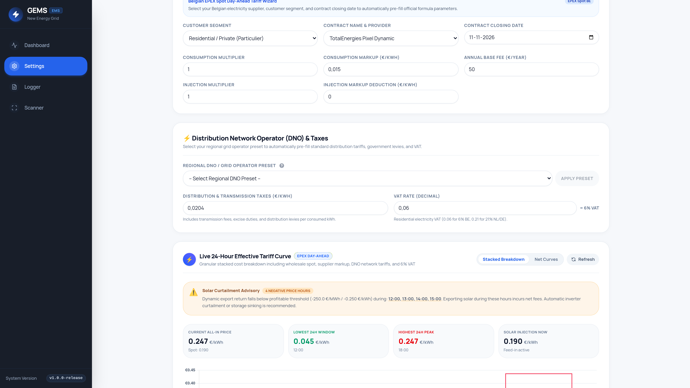
Figure 9.1: Selecting one of the 5 Contract Wizards, DNO regional presets, and tax components.
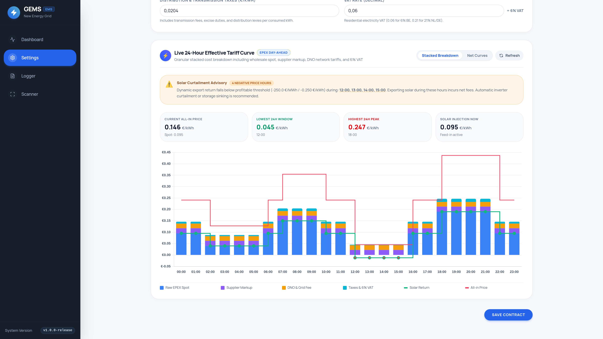
Figure 9.2: Live 24-Hour Effective Tariff Curve Visualizer showing stacked price components and solar injection returns.
Step-by-Step: Choosing the Right Contract Wizard (5 Wizards Explained)
Contract Wizard
Who Should Use It
Every Field Inside This Wizard Explained
1. Fixed / Variable Rates
Homeowners with a classic single/dual tariff meter (Peak / Off-Peak) and fixed feed-in tariff.
• Peak Rate (€/kWh): Daytime electricity rate (07:00–22:00 weekdays).
• Off-Peak Rate (€/kWh): Night & weekend rate (22:00–07:00 + weekends).
• Solar Feed-In Tariff (€/kWh): Fixed compensation paid per kWh exported to the street.
2. Advanced Dynamic (Visual Formula Builder)
Custom dynamic contracts or power users who want a visual drag-and-drop formula builder.
• Market Price Source: Links to live Day-Ahead EPEX Spot (€/MWh or €ct/kWh).
• Interactive Drag & Drop Formula Builder: Click or drag chips (EPEX_EUR_KWH, +, *, 0.105) to build your exact consumption and solar injection formulas, plus optional Time-Dependent Rules (e.g. peak grid fee markups).
3. Dynamic-BE (Belgian Hourly EPEX)
Belgian homeowners or businesses on an hourly dynamic contract.
• Customer Segment:Private (6% VAT) or Business (21% VAT).
• Belgian Provider Preset & Closing Date: Auto-fills verified Belgian supplier formulas:
– consumption_multiplier & consumption_adder (applied to EPEX * 0.001 * mult + adder)
– injection_multiplier & injection_adder (handles negative injection fees)
– Annual Fixed Administrative Fee (€/yr).
4. Flex-BE (Time-of-Use + Monthly EPEX)
Belgian variable/flex contracts with Peak, Off-Peak, and Super-Dal (01:00–07:00) brackets.
• Peak / Off-Peak / Super-Dal Markup (€/kWh): Supplier tariff for each time window.
• Injection Multiplier & Adder: Solar feed-in calculation.
• Automatically Charge Battery in Super-Dal Window (01:00–07:00): One-click toggle + Target SoC (%) to fill the battery overnight at Super-Dal rates.
5. Dynamic-NL (Dutch Hourly EPEX)
Dutch homeowners on a dynamic hourly contract in the Netherlands.
What It Does Click your regional grid operator preset button (Fluvius, ORES, Resa, Sibelga, or NL DNOs) to auto-fill Distribution & Transmission Taxes (€/kWh) and VAT Rate (0.06 for 6% BE residential, 0.21 for 21% NL/Business).
Live 24-Hour Effective Tariff VisualizerStacked & Net Curves
What It Does Displays your exact hour-by-hour retail price for today: Current All-In Price, Lowest 24h Window (best hour for EV/battery), Highest 24h Peak, and Solar Injection Now, plus a live Solar Curtailment Advisory Banner if afternoon export prices turn negative!
Settings → Relays & Switches turns surplus solar power and negative spot prices into free hot water and space heating by controlling smart contactors (Shelly Pro/Plus, Modbus TCP/RTU relays, and SG-Ready heat pumps).
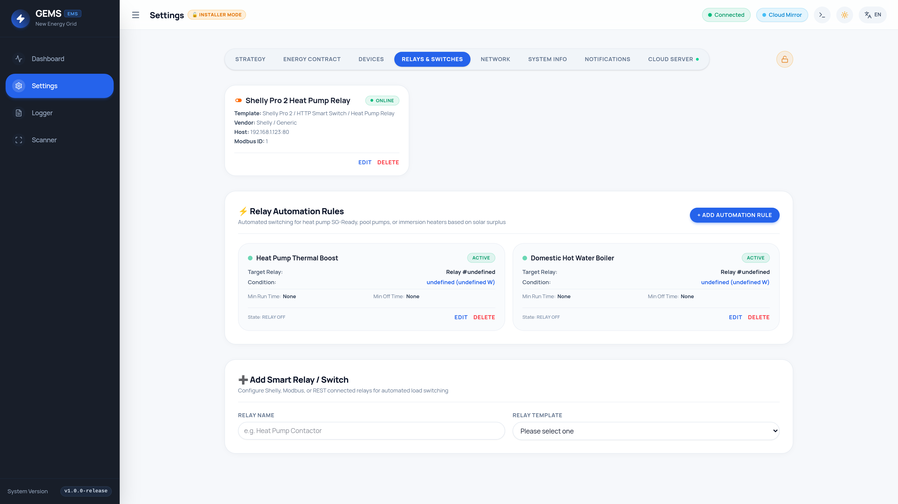
Figure 10.1: Configured Smart Relays with live ON/OFF status and manual override toggle.
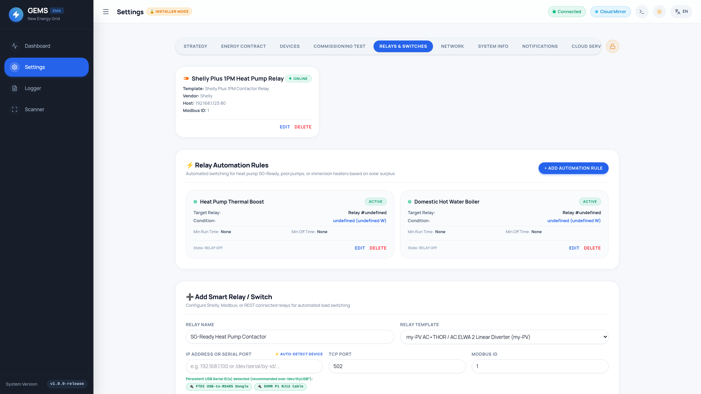
Figure 10.2: Creating an Automation Rule with anti-short-cycling minimum run/off timers.
Every Relay Automation Rule Setting Explained
Condition Type (4 Triggers)Solar or Spot Price
• solar_export_exceeds: Triggers when net solar export to the street exceeds X Watts (e.g. 1500 W).
• grid_import_below: Triggers when grid import is below X Watts.
• spot_price_below: Triggers when dynamic electricity price is ≤ X €/kWh (e.g. 0.04 €/kWh).
• spot_price_negative: Triggers automatically whenever wholesale prices drop below €0.00/kWh!
Min Run Time (sec) & Min Off Time (sec)Compressor Protection
What It Does Prevents heat pump compressors and contactors from rapidly clicking ON and OFF ("short-cycling") when passing clouds briefly dip solar production.
Recommended For heat pumps, set Minimum Run Time to 900–1800 sec (15–30 min) and Minimum Off Time to 600 sec (10 min). For resistive water boilers, 300 sec (5 min) is ideal.
SG-Ready Heat Pump 2-Relay Operating Matrix
SG-Ready State
Relay 1 : Relay 2
Heat Pump Behavior & When GEMS Activates It
State 1 — Utility Lockout
1 : 0
Temporarily blocks compressor during extreme capacity peaks (if configured).
State 2 — Normal Eco Mode
0 : 0
Standard thermostat operation (default everyday state).
State 3 — Solar Boost Recommendation
0 : 1
Raises domestic hot water & buffer tank temperature target when moderate solar surplus (e.g. > 1,200 W) or cheap night spot prices are available.
State 4 — Forced Max Thermal Storage
1 : 1
Commands immediate maximum thermal boost during high solar surplus (> 2,500 W) or negative electricity prices.
Settings → Network (visible in Certified Installer Mode) manages your Raspberry Pi's primary wired Ethernet interface (eth0). For maximum industrial reliability inside metal electrical cabinets, wireless Wi-Fi interfaces are intentionally omitted in favor of hardwired Ethernet.
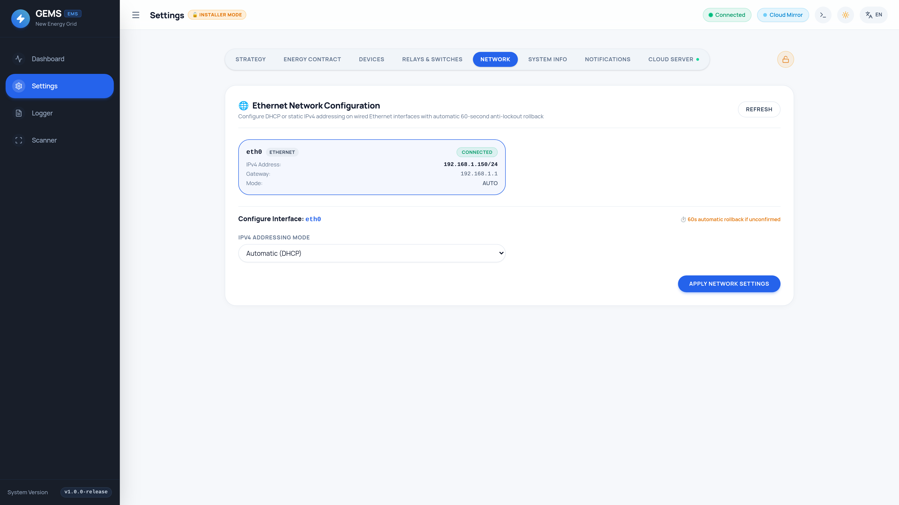
Figure 11.1: Wired Ethernet (eth0) configuration with DHCP or Static IPv4 and automatic 60-second anti-lockout rollback protection.
Configuration Mode: DHCP vs. Static IPv4DHCP Default
• DHCP (Automatic): Your router automatically assigns the IP address, gateway, and DNS.
• Static IPv4 (Manual): Lock a fixed IP (e.g. 192.168.1.200/24), Gateway (192.168.1.1), and DNS Servers (1.1.1.1, 8.8.8.8). Recommended when Fluvius RTUs or OCPP chargers connect to GEMS by IP.
What It Does When you apply a new Static IP, GEMS starts a 60-second safety timer and opens a confirmation modal. If you made a typo in the IP or subnet mask and your browser cannot reach the unit within 60 seconds, GEMS automatically reverts to your previous working network settings so you never get locked out!
12. Settings Tab 6: System Info, Backups, PIN, OTA Updates & SSL
Settings → System Info provides system identity, safe reboot, cryptographically signed software updates, portable JSON configuration backups, PIN rotation, and local HTTPS certificates:
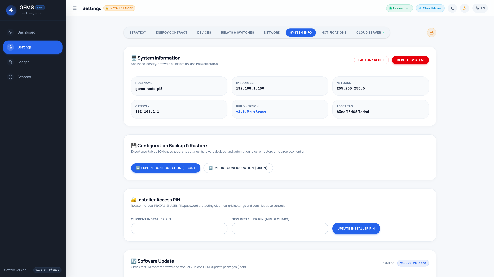
Figure 12.1: System Info showing Hostname, IP, Release Build Tag, Asset Tag, Backup/Restore, and Signed Software Updates.
System Identity, Reboot & Factory ResetAlways Visible
Displays Hostname, IP Address, Netmask, Gateway, Build Version (v9.32.3), and unique Asset Tag.
• Reboot System: Safely flushes the SQLite WAL database and restarts the controller.
• Factory Reset (Installer Mode): Wipes configuration & device history and re-launches the 4-Step Commissioning Wizard.
What It Does Click Export Configuration to download a portable .json snapshot containing all your devices, strategy limits, tariff formulas, and relay rules. Click Import Configuration to clone or restore a setup in 5 seconds!
Software Update (Online OTA & Manual .deb)Ed25519 Verified
What It Does Click Check for Updates to install the latest release over the air, or drag-and-drop an offline .deb package. Every update is cryptographically verified (Ed25519 signature + SHA-256 checksum) with live terminal progress logs.
Local CA & SSL Certificate + PIN RotationHTTPS Trust
What It Does Download the GEMS Root CA Certificate (.crt) or add custom local domains (e.g. gems.home.lan) with instant hot-reload and step-by-step trust guides for Chrome, Safari/iOS, macOS, Windows, and Android. You can also rotate your Installer PIN here.
What It Does Sends instant JSON alerts to Slack, Discord, Telegram bridges, or generic home automation webhook endpoints whenever your Flanders 15-minute peak approaches ≥ 90% of your ceiling, or if an inverter/charger drops offline. Click Test Webhook to verify delivery immediately.
Weekly Email Report & SMTP SettingsSundays at 20:00
What It Does Emails a formatted weekly energy report (solar kWh, self-sufficiency %, EV kWh, and peak kW) every Sunday at 20:00. Enter your Recipient Email, SMTP Host (e.g. smtp.gmail.com), Port (587), Username, Password, and Sender Address.
Debug Mode (Verbose System Logging)Default: Off (INFO)
What It Does Switches the system logger from standard INFO level to verbose DEBUG level (recording individual Modbus register payloads, OCPP frames, and strategy math). Keep Off during normal operation to minimize SD/NVMe wear; enable temporarily when diagnosing a new device.
14. Settings Tab 8: Optional Cloud Server (GRID-EMS-SERVER)
Settings → Cloud Server manages your optional encrypted connection to GRID-EMS-SERVER (https://ems.newenergygrid.com) for remote monitoring from anywhere in the world and remote installer support.
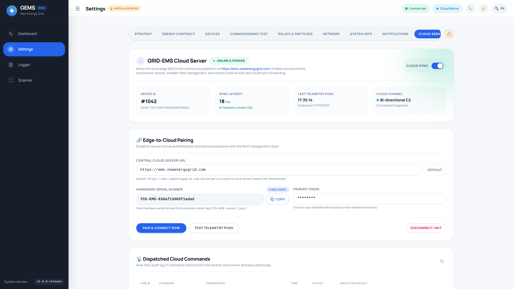
Figure 14.1: Cloud Server pairing interface, live sync latency KPIs, and Dispatched Cloud Commands audit log.
Cloud Sync Toggle & Pairing TokenPAIR-XXXX-TCG
What It Does Paste your 16-character pairing token from https://ems.newenergygrid.com and click Pair & Connect Now. Uses outbound-only TLS 1.3 encryption—zero router port forwarding required!
Test Telemetry Push & Command Audit LogLive Verification
What It Does View your Device ID, Sync Latency (ms), and Last Telemetry Push timestamp. Click Test Telemetry Push to force an immediate packet sync, or inspect the Dispatched Cloud Commands audit log to see every remote mode change acknowledged by your unit.
15. Network Scanner, Live Logger, PDF Energy Reports & Mobile App
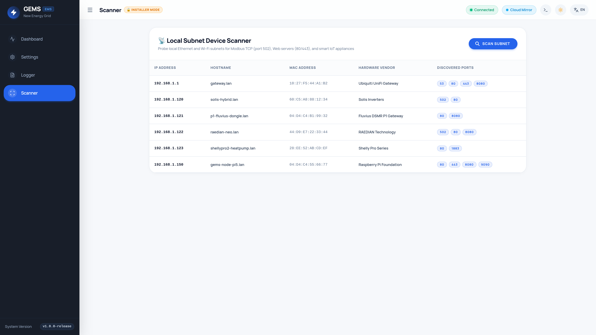
Figure 15.1: Sidebar → Scanner: Automated LAN & Modbus TCP/RTU discovery with one-click "+ Configure Device" onboarding.
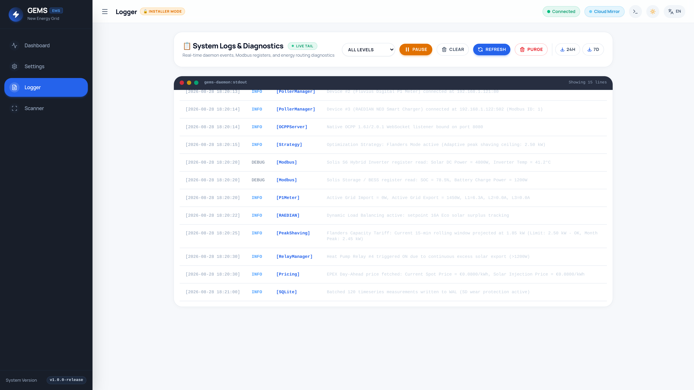
Figure 15.2: Sidebar → Logger: Live color-coded event stream with level filtering, search, Pause, and Export Logs (.log).
What It Does Automatically recognizes the GEMS controller itself (THIS GEMS CONTROLLER), sweeps your local /24 network using mDNS, UPnP/SSDP, 24/28/36-bit IEEE MAC OUI resolution, and Modbus/HTTP/TLS protocol fingerprinting, and scans attached USB/RS-485 serial ports with one-click + Configure device onboarding.
📄 One-Click Printable PDF Energy ReportsDaily / Weekly / Monthly / Yearly
What It Does On the main Dashboard, select Daily, Weekly, Monthly, or Yearly and click Export PDF to download a formatted executive summary of your solar generation, battery cycles, EV kWh, and capacity peak savings.
📱 Pro-Tip: Install GEMS as a Full-Screen App on Your Smartphone
Connect your phone to your home Wi-Fi and open http://ems.local in Safari (iPhone) or Chrome (Android). Tap Share → Add to Home Screen. GEMS launches as a sleek full-screen mobile app with a thumb-friendly bottom navigation bar!
Select PV Only mode (or Eco with Cheapest Spot Price Hours = 0). Also enable Automatic 1P/3P Phase Switching on your Raedian charger!
Keep my Flanders monthly peak at the 2.50 kW minimum
Settings → Strategy
Set Optimization Mode = Flanders (Peak Shaving), Capacity Peak Limit = 2.50 kW, and Peak Shaving Buffer = 150 W.
Stop paying penalties when afternoon solar spot prices go negative
Settings → Strategy & Devices
Check Allow Curtailment on your Solis inverter in Devices, and enable Active Inverter Curtailment in Strategy with Base Export Price Threshold = 0.00 €/kWh.
Protect my Flemish Groenestroomcertificaten (GSC) during negative prices
Settings → Strategy
Select your GSC Preset (e.g. €250 or €350/MWh). GEMS will only curtail solar if the negative spot price exceeds your subsidy value!
Pre-charge my home battery overnight before a cloudy winter day
Settings → Strategy
Under Battery Grid Charging, select Dynamic + Solar Forecast and set your Grid Charge Ceiling (€/kWh) (e.g. 0.10 €/kWh) or add a Custom Charging Window.
Heat my water boiler or SG-Ready heat pump with excess solar
Settings → Relays & Switches
Add a rule with Condition = solar_export_exceeds (e.g. 1500 W) and set Min Run Time = 900 sec.